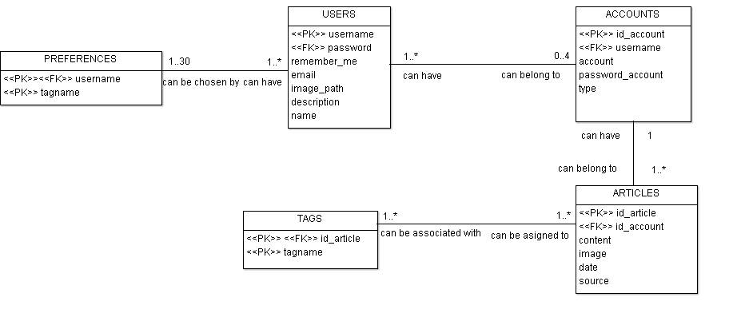

Documentatie RIX
Abstract
Acest proiect se dorește a fi un instrument Web de colectare, de regăsire și de vizualizare a informațiilor referitoare la resurse științifice și tehnologice (articole, cărți, rapoarte tehnice, prezentări, cod-sursă și altele) ale utilizatorilor din domeniul informaticii. Dezvoltând o aplicație de tip mash-up, se oferă informații de interes pentru o anumită persoană, pornind de la resursele multimedia deja colectate și clasificate via aplicații Web sociale precum Feedly, GitHub, Google Scholar, Slideshare, Vimeo. Informațiile (structurate pe diverse criterii) vor fi vizualizate în formate precum HTML, SVG sau text obișnuit. De asemenea, sistemul oferă acces la informații prin intermediul unui API REST.
Motivatie
Aplicațiile existente la momentul actual încadrează informația de specialitate după tipul acesteia (cod, video-uri, articole etc.), astfel fiind dificil utilizatorilor să acceseze informații privind aceeași arie redate sub diferite forme.
Aplicația dorește a ușura procesul de regăsire a informațiilor deja accesate de utilizatori prin colectarea acestora și încadrarea lor în funcție de tematică. Pe baza diferitelor conturi asociate unor aplicații Web (precum: GitHub, Feedly, Slideshare, Google Scholar, Vimeo) introduse de către utilizator, acesta poate beneficia de vizualizarea tuturor informațiilor preferate în același loc. De asemenea, pe baza preferințelor i se vor oferi articole care vizează același subiect.
În continuare vom folosi termenul articol ca un termen general, acesta înglobând orice tip de informație (sub forme diferite) : video, articol - text, prezentare, cod etc.
Bineînțeles, există posibilitatea recomandării de anumite articole și unui utilizator care nu are nici un cont specificat, aceasta se face în urma selectării anumitor tag-uri favorite de către beneficiar. Ușurința cu care utilizatorul va putea accesa doar informațiile pe care dorește să le vizualizeze, precum și regăsirea lor în același loc reprezintă nu doar un mod de a câștiga timp ci și un instrument util de a manipula informația de care are nevoie.
Principalele țeluri care au motivat crearea unei astfel de aplicații sunt:
- Încadrarea informației colectate de pe diferite site-uri sau aplicații într-un singur loc.
- Recomandarea de articole pe baza preferințelor și accesărilor fiecărui utilizator în parte.
- Clasificarea informațiilor colectate.
În plus, pentru o utilizare cât mai facilă, aplicația poate fi accesată de pe diferite dispozitive.
Descrierea aplicatiei
RIX este o aplicație dedicată celor interesați de domeniul IT. Aplicația colectează informațiile din conturile utilizatorului și le stochează într-o bază de date SQL, utilizatorul având acces la acestea odată logat. După înregistrarea unui utilizator, acesta își alege ariile de interes și își adaugă apoi conturile aferente diferitelor aplicații. Informațiile deja accesate precum și cele recomandate îi vor fi afișate în pagini diferite, fiecare articol putând fi vizualizat separat.
Fiind o aplicație web, pentru realizarea acesteia vom utiliza HTML5, CSS3 și JavaScript pentru partea de front-end. Pe partea de back-end vom folosi framework-ul Laravel 5.2 ce are la bază limbajul PHP, care facilitează dezvoltarea aplicației într-o manieră MVC. Pentru stocarea de informații soluția aleasă este utilizarea unei baze de date Oracle.
Arhitectura aplicației

Fig. 1 - Diagrama arhitecturală a aplicației
Workflow-ul aplicației
Aplicația oferă userilor diferite articole aparținând aceleiași arii. Pentru a exista și posibilitatea oferirii de informații unor useri care nu au optat să-și introducă conturile aferente altor site-uri și aplicații Web, vor exista și articole deja colectate anterior. Colectarea se face astfel în două momente: înainte de lansarea aplicației și după înregistrarea userilor. Pentru fiecare tag (categorie) se va colecta inițial un anumit număr de articole provenite de pe aplicații deja menționate: GitHub, Feedly, Vimeo, GoogleScholar, SlideShare.
Primul contact al unui user cu aplicația noastră va fi prin pagina de înregistrare/autentificare. În momentul în care un user și-a creat un cont (username, password) acesta va putea să își creeze profilul (va putea alege diferite tag-uri preferate și de asemenea, va putea să-și introducă și conturile aferente aplicațiilor menționate mai sus). Un utilizator este restricționat să aleagă cel puțin o categorie preferată, altfel nu i s-ar putea afișa niciun articol.
După etapa introductivă, de creare a profilului, utilizatorul are posibilitatea să vizualizeze doar conținutul propriu (diferite articole procurate din propriile conturi) prin pagina My Content sau doar recomandări (acestea oferite pe baza preferințelor sale) prin pagina Recommended Content. De asemenea, în pagina principală poate vizuliza întregul său conținut, atât recomandări cât și ceea ce ține de profilul său.
În momentul in care un utilizator este interesat să găsească un anumit articol, acesta poate fi căutat prin butonul Search. De asemenea, LOAD MORE va afișa în continuare mai multe articole, în caz de acesta dorește să vizualizeze și restul conținutului. Câmpul Settings permite utilizatorului să își schimbe preferințele, indiferent că dorește să își adauge/șteargă un cont ori își adaugă/șterge anumite tag-uri. Bineînțeles, acesta poate să-și schimbe parola sau numele de utilizator oricând dorește, această facilitate putând fi găsită pe pagina My Account.
Recomandările se fac pe baza preferințelor utilizatorului. După ce acesta-și va seta tag-urile favorite, în pagina de recomandări i se vor afișa articole pe care acesta nu a avut șansa să le acceseze încă. Bineînțeles, în baza de date sunt stocate pentru toate tag-urile, conținuturi (articole) atât din colectarea inițială, cât și din colectarea prin intermediul informațiilor introduse de utilizatori. Astfel, unui utilizator care și-a ales printre preferințe Java, i se pot oferi, ca și recomandări, articole colectate din conturile altor utilizatori ce au ales și ei Java ca fiind un "domeniu" de interes.
Deoarece se dorește ca utilizatorul să beneficieze de o cât mai eficientă vizualizare a articolelor, acesta-și poate filtra conținutul în funcție de tag-urile pe care le dorește, precum și sursa de proveniență. De asemenea, acesta le poate sorta în funcție de data la care au fost publicate și are și posibilitatea să i se afișeze doar conținutul deja citit sau cel încă neaccesat.
Fiind o practică destul de întâlnită în zilele noastre, pentru a eficientiza procesul de autentificare nu este necesar ca un utilizator să își introducă datele de fiecare dată când dorește să acceseze aplicația. Astfel, bifarea căsuței specifice câmpului REMEMBER ME va ajuta la reținerea informațiilor legate de utilizator prin memorarea SESSION ID ului, bineînțeles, framework-ul facilitând acestă procedură.
Tehnologii
Fiind o aplicație web, pentru realizarea acesteia vom utiliza HTML5, CSS3 și JavaScript pentru partea de front-end. De asemenea vom folosi framework-ul Bootstrap pe partea de frontend si Font Awesome pentru iconiţele din aplicaţie.
Pe partea de back-end vom folosi framework-ul Laravel 5.2 ce are la bază limbajul PHP, care facilitează dezvoltarea aplicației într-o manieră MVC. Pentru stocarea de informații soluția aleasă este utilizarea unei baze de date Oracle.
La nivel de dezvoltare vom folosi GitHub pentru comunicarea şi centralizarea datelor, dar şi pentru stocarea diferitelor versiuni ale aplicaţiei.
Front-end
Aplicaţia va conţine câteva pagini principale prin care se va realiza interacţiunea cu utilizatorul.
Login/Register
Utilizatorul îşi va crea un cont sau se va loga pe un cont existent în aplicaţia noastra.

Fig. 2 - Pagina Login
Pagina principala
În această pagină va fi prezentat întreg conţinutul utilizatorului şi va avea loc interacţiunea cu acesta. Astfel aceasta pagina va fi împărţită în 2 secţiuni:
Conţinut recomandatConţinut agregat

Fig. 3 - Pagina principală
Pagina de conţinut
În pagina de conţinut se va prezenta conţinutul integral al unui articol selectat de utilizator. Tipurile de articole sunt:
Articol cu imaginiArticol cu videoclipuriArticol cu secţiuni de cod

Fig. 4 - Pagina de articol
Pagina de setări
În pagina de setări utilizatorul va putea modifica toate detaliile legate de contul lui. Aceasta este împarţită în 2 secţiuni:
Detaliile utilizatoruluiConturile ataşate

Fig. 5 - Pagina de setări
Back-end
Primul contact al back-endului cu fluxul aplicației are loc în momentul înregistrării/autentificării userilor. Back-end-ul se ocupă cu dirijarea tuturor elementelor ce urmează a fi utilizate de către următoarele module: înregistrare, autentificare, setarea preferințelor, colectare, recomandare, căutare și afișare de informații.
Modulul de autentificare poate fi realizat foarte ușor datorită mecanismului de filtrare a cererilor HTTP printr-un middleware. Acest mecanism oferit de Laravel permite folosirea aplicației de către un user fără neccesitatea autentificării, cu condiția existenței unei logări anterioare. În cazul în care nu există, middleware-ul trimite user-ul la pagina de autentificare.
Există două etape în colectarea datelor: colectarea inițială (default) pentru fiecare tag în parte și colectarea agregată pe baza informațiilor introduse de user.
De asemenea sistemul de rute oferă suport pentru realizarea unui API REST.
Comunicarea cu API-urile diferitelor servicii se va realiza prin trimiterea/primirea de obiecte de tip JSON/XML. Conţinutul primit va fi prelucrat şi afişat utilizatorului. De asemenea există funcţii legate de parsarea conţinutului
ce vor găsi tag-uri reprezentative pentru un anumit conţinut şi vor recomanda conţinut similar utilizatorului.
GitHub
Conexiunea la API-ul GitHub se va realiza pe baza trimiterii de request-uri la adresa https://api.GitHub.com. Toate datele transmise sunt în format JSON, atât cererea iniţiala de conectare cât şi cererile ulterioare
de retragere a conţinutului. Conţinutul necesar aplicaţiei noastre este localizat în fişierele din repository-urile utilizatorului. Comunicand cu API-ul GitHub prin request-uri de tip GET în format JSON
şi vom salva urmatoarele atribute:
titlulshort descriptioncontent
La construcţia unei pagini se va parsa doar link-ul salvat în baza de date şi va fi preluat conţinutul lui şi afisat în pagina pentru a evita salvarea volumelor
mari de date în baza de date. Integrarea API-ului GitHub v3 cu Laravel 5 va avea loc prin intermediul unui wrapper PHP. Astfel iniţial se va realiza conexiunea cu API-ul pentru a avea datele de conectare în caz
că cererile au nevoie de date private specifice unui user ce nu sunt publice.
Pocket este o aplicație ce ține evidența listei de lecturi a unui utilizator. Prin intermediul unui wrapper PHP pentru API-ul Pocket avem acces atât la conținutul arhivat, cît și la cel nearhivat al unui utilizator. Răspunsurile la cererile făcute sunt returnate în format JSON.
Conectarea are loc în trei pași, fiind necesare un consumer key, un request token și un access token, primul fiind necesar pentru a identifica aplicația, iau ultimul fiind specific fiecărui utilizator. Informațiile necesare apliației RIX sunt obținute cu ajutorul următoarelor metode:
POST /v3/oauth/requestpentru conectarea aplicației RIX la API-ul PocketPOST /v3/oauth/authorizepentru obținerea token-ului specific fiecărui utilizatorGET cu parametrii specifici (tag, contentType, detailType, etc.)pentru a obține metadate despre articolele din contul de pocket atașat de utilizator, permițând căutarea după diferite criterii
Slideshare
Slideshare este un serviciu oferit de LinkedIn ce oferă accesul la prezentări din toate domeniile, incluzând informatica. Astfel, prin intermediul API-ului se pot face cereri de prezentări.
Fiecare cerere făcută la SlideShare API trebuie validată, astfel că fiecarei cereri îi corespund urmatorii parametrii:
api_keySlideShare ofera câte unapi_keyfiecarui user din motive de securitate.tsTimpul curent al cererii în format UNIX TimeStamphashSHA1(api_key.ts)
Get Slideshow Informationpentru informații suplimentare despre prezentareGet Slideshows By Tagpentru colectarea inițialăGet Slideshows By Userpentru colectarea prezentărilor unui respectiv userGet Users Favoritespentru revizualizarea prezentărilor considerate favorite
XML, cu informaţiile corespunzătoare.
Vimeo
Pentru că orice informație poate fi redată și sub formă de video, am ales să lucrăm și cu API-ul oferit de Vimeo pentru a colecta tot ce este necesar pentru crearea profilului user-ului.
- Colectarea Inițială
- Colectarea pe baza contului unui user
În baza de date sunt predefinite anumite tag-uri. Pe baza acestora se va face căutarea de video-uri. API-ul oferă această posibilitate prin comanda GET https://api.vimeo.com/tags/{word}/videos. De asemenea, Vimeo facilitează de o încadrare a video-urilor în categorii și deoarece tag-urile noastre pot fi asociate și cu nume de categorii, vom putea căuta și video-uri care se găsesc într-o anumită categorie, prin GET https://api.vimeo.com/categories/{category}/videos. Ambele comenzi vor returna o listă de video-uri legate de tema specificată. Pentru a integra video-ul într-o pagină se ve folosi oEmbed. oEmbed este un format ce permite reprezentarea integrată pe un site extern, a unui video/a unei imagini pe baza unui URL, fără a fi necesară parsarea directă, acest API oferind astfel posibilitatea integrării unui video preluat de pe Vimeo.
Pentru conținutul public al acestuia se va folosi GET https://api.vimeo.com/users/{user_id}/videos. Pentru a putea intra în posesia video-urilor private ale unui anumit utilizator, va trebui inițial să se facă autentificarea acestuia. Vimeo API folosește OAuth 2.0 pentru logarea în contul user-ului. Fiind o aplicație Multi-user va fi necesară generarea de access token-uri. Pentru a putea accesa pagina privată a utilizatorului acesta ar trebui să fie redirecționat pe site-ulVimeo unde ar trebuie să opteze pentru accesarea paginii sau nu. În momentul în care un utilizator ar dori să-și introducă contul de Vimeo, acesta va trebui să opteze dacă dorește doar video-urile publice sau le dorește și pe cele private. Dacă va opta să i se preia și conținutul private, acesta va fi avertizat că de fiecare dată când va dori să își vizualizeze propriul conținut va fi redirecționat pe site unde va fi nevoit să introducă id-ul și parola.
Stocarea datelor
Framework-ul realizează armonios legătura dintre baza de date și backend. Am optat să lucrăm cu baza de date Oracle 11g. În figura de jos este prezentată schema bazei de date.
Fig. 6 - Schema bazei de date
În momentul înregistrării unui utilizator, în baza de date se stochează username-ul (doar dacă nu există deja), precum și password-ul introdus de acesta. În baza de date parola unui user se va stoca sub formă de text criptat folosind bineînțeles clasa Hash oferită de frameworkul specificat. După cum se observă și în schema bazei de date, facilitatea opțiunii REMEMBER ME este oferită prin reținerea acestei informațiiîn tabelele aferente aplicației. Dacă utilizatorul bifează căsuța, atunci în coloana REMEMBER ME va fi setată ca având valoarea true.
Tabela ACCOUNTS reține toate conturile specifice unui user, doar dacă acesta le-a introdus. Bineînțeles același cont poate aparține mai multor utilizatori. Prin atributul Type se va reține tipul aplicației pentru care este specificat contul respectiv, spre exemplu contul "mynamegit" reprezintă contul de GitHub al utilizatorului, iar contul "mynamefeedly", pe cel de pe Feedly. Un user poate să nu introducă niciun cont asta însemnând că atributele Account, Password și Type putând accepta valori de NULL.
În tabelul ARTICLES se rețin articole, atât provenite de la anumiți useri cât și colectate inițial. Pentru colectarea inițială atributul Id_account va rămâne NULL. Pentru articolele colectate de la useri, valoarea coloanei Source va coincide cu atributul Type din ACCOUNTS pentru utilizatorul respectiv, deși pare redundant, pentru a nu crea încă un tabel cu articolele colectate inițial, am preferat introducerea acestui câmp Source.
Pentru a fi mult mai ușor să construim o interogare ce ne va returna toate articolele cu un anumit tag, tabelul TAGS reține exact id-urile articolelor de care avem nevoie. Am ales să creăm un tabel special pentru asta deoarece un articol poate avea asociat mai multe tag-uri și ar fi un cost de memorie mult prea mare dacă am introduce mai multe tuple cu aceleași informații doar cu tag-ul diferit. După cum se observă aceasta este o relație de tip many to many.
Pentru a lucra cu baza de date cât mai ușor se vor scrie funcții în PLSQL pentru a returna exact ce este necesar unei cereri. Laravel - OCI8 este un pachet Oracle Database Driver special pentru Laravel. Bineînțeles, framework-ul dispune și de un ORM, Eloquent. Fiecare tabel din baza de date are ca și corespondent un "Model" care va interacționa cu tabelul. Aceste modele permit interogări ale tabelelor, precum și inserări de noi date. După cum se știe ORM-urile sunt folosite pentru securitate, astfel oferind siguranță în lucrul cu datele prin ascunderea felului în care acestea sunt stocate. Legat de securitate, prevenind SQL Injection, Eloquent ORM folosește parametri dinamici, PDO, astfel fiind sigur din acest punct de vedere, userii nu pot introduce în interogare informații ce ar putea modifica scopul inițial al acesteia.
Pentru a eficientiza căutarea, în baza de date vor fi creați inițial 4 indecși: pe USERS(username) - pentru ușurința în procesul de autentificare , TAGS(tagname) - pentru a se găsi repede toate articolele de la un anumit tag, ARTICLES(name) - facilitează opearția de Search și ARTICLES(Id_account) pentru găsirea rapidă a conținutului unui anumit utilizator.
Etapele intermediare ale dezvoltării proiectului
- Saptamana 0: Prezentarea documentației
- Saptamana 1: Partea de gestionare a fluxului aplicației (register,login,setting,account settings) și conceperea bazei de date
- Saptamana 2: Integrarea de API-uri, crearea sistemului de recomandări și crearea de de view-uri
- Saptamana 3: Finisarea integrarii și prezentarea proiectului.
Distribuirea Sarcinilor
- Anca Adăscăliței
- Gestionarea fluxului aplicației, partea de server
- Integrarea Pocket
- Giosanu Eveline
- Lucrul cu baza de date și crearea conexiunii cu partea de server
- Integrarea Vimeo
- Gordîn Ștefan
- Gestionarea fluxului aplicației, partea de server
- Integrarea SlideShare
- Ionuț Iacob
- Crearea view-urilor și integrarea acestora în fluxul aplicației
- Integrarea GitHub
Bibliografie
- http://getbootstrap.com/
- https://fortawesome.github.io/Font-Awesome/
- https://gitextensions.github.io/
- https://laravel.com/docs/5.2
- https://laracasts.com/
- https://developer.github.com/v3/
- https://developer.feedly.com/
- http://www.sitepoint.com/use-githubs-api-php/
- https://github.com/tan-tan-kanarek/github-php-client
- http://www.slideshare.net/developers/documentation
- https://developer.vimeo.com/